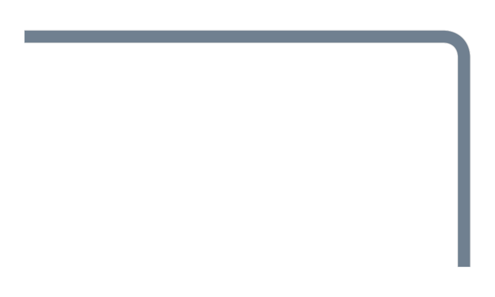
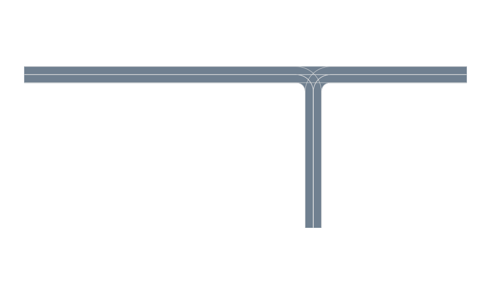
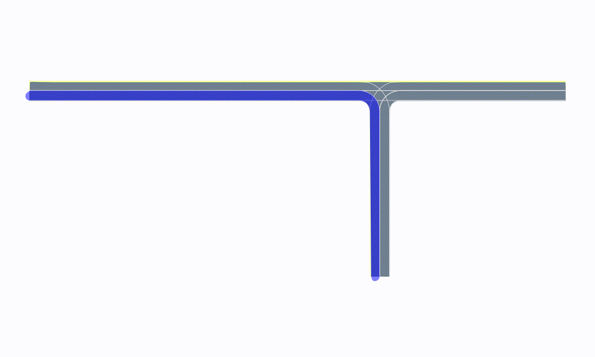
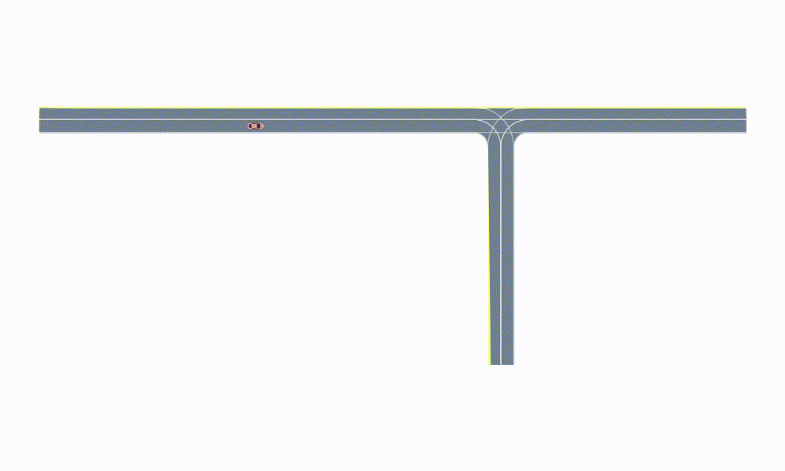

Intersection
In this example we demonstrate how to define a T-shape intersection with AutomotiveDrivingModels. You will also learn how to define your own custom action type and driver model type.
Generate a T-Shape intersection
In order to generate the road network, we first initialize a Roadway object.
using AutomotiveDrivingModels
using AutoViz
using Random
roadway = Roadway()Define coordinates of the entry and exit points to the intersection
r = 5.0 # turn radius
w = DEFAULT_LANE_WIDTH
A = VecSE2(0.0,w,-π)
B = VecSE2(0.0,0.0,0.0)
C = VecSE2(r,-r,-π/2)
D = VecSE2(r+w,-r,π/2)
E = VecSE2(2r+w,0,0)
F = VecSE2(2r+w,w,-π)The next step consists in appending all the lanes to the road network. We can define a helper function to add a new lane to the roadway.
function append_to_curve!(target::Curve, newstuff::Curve)
s_end = target[end].s
for c in newstuff
push!(target, CurvePt(c.pos, c.s+s_end, c.k, c.kd))
end
return target
endExample of a lane that consists of 3 road segments, a straight curve (from the left to the center), a turning part (right turn) and a final straight curve.
# Append right turn coming from the left
curve = gen_straight_curve(convert(VecE2, B+VecE2(-100,0)), convert(VecE2, B), 2)
append_to_curve!(curve, gen_bezier_curve(B, C, 0.6r, 0.6r, 51)[2:end])
append_to_curve!(curve, gen_straight_curve(convert(VecE2, C), convert(VecE2, C+VecE2(0,-50.0)), 2))
lane = Lane(LaneTag(length(roadway.segments)+1,1), curve)
push!(roadway.segments, RoadSegment(lane.tag.segment, [lane]))
# visualize the current lane constellation
snapshot = render([roadway])
Let's repeat the process and complete the T-shape intersection
# Append straight left
curve = gen_straight_curve(convert(VecE2, B+VecE2(-100,0)), convert(VecE2, B), 2)
append_to_curve!(curve, gen_straight_curve(convert(VecE2, B), convert(VecE2, E), 2)[2:end])
append_to_curve!(curve, gen_straight_curve(convert(VecE2, E), convert(VecE2, E+VecE2(50,0)), 2))
lane = Lane(LaneTag(length(roadway.segments)+1,1), curve)
push!(roadway.segments, RoadSegment(lane.tag.segment, [lane]))
# Append straight right
curve = gen_straight_curve(convert(VecE2, F+VecE2(50,0)), convert(VecE2, F), 2)
append_to_curve!(curve, gen_straight_curve(convert(VecE2, F), convert(VecE2, A), 2)[2:end])
append_to_curve!(curve, gen_straight_curve(convert(VecE2, A), convert(VecE2, A+VecE2(-100,0)), 2))
lane = Lane(LaneTag(length(roadway.segments)+1,1), curve)
push!(roadway.segments, RoadSegment(lane.tag.segment, [lane]))
# Append left turn coming from the right
curve = gen_straight_curve(convert(VecE2, F+VecE2(50,0)), convert(VecE2, F), 2)
append_to_curve!(curve, gen_bezier_curve(F, C, 0.9r, 0.9r, 51)[2:end])
append_to_curve!(curve, gen_straight_curve(convert(VecE2, C), convert(VecE2, C+VecE2(0,-50)), 2))
lane = Lane(LaneTag(length(roadway.segments)+1,1), curve)
push!(roadway.segments, RoadSegment(lane.tag.segment, [lane]))
# Append right turn coming from below
curve = gen_straight_curve(convert(VecE2, D+VecE2(0,-50)), convert(VecE2, D), 2)
append_to_curve!(curve, gen_bezier_curve(D, E, 0.6r, 0.6r, 51)[2:end])
append_to_curve!(curve, gen_straight_curve(convert(VecE2, E), convert(VecE2, E+VecE2(50,0)), 2))
lane = Lane(LaneTag(length(roadway.segments)+1,1), curve)
push!(roadway.segments, RoadSegment(lane.tag.segment, [lane]))
# Append left turn coming from below
curve = gen_straight_curve(convert(VecE2, D+VecE2(0,-50)), convert(VecE2, D), 2)
append_to_curve!(curve, gen_bezier_curve(D, A, 0.9r, 0.9r, 51)[2:end])
append_to_curve!(curve, gen_straight_curve(convert(VecE2, A), convert(VecE2, A+VecE2(-100,0)), 2))
lane = Lane(LaneTag(length(roadway.segments)+1,1), curve)
push!(roadway.segments, RoadSegment(lane.tag.segment, [lane]))
snapshot = render([roadway])
We can identify each lane thanks to the following user-defined functions. We define a LaneOverlay object that indicate the lane to highlight. One could implement any custom type to display other information on the lane. We then add a new method to the add_renderable! function that execute the specific action (coloring in blue). Look at Autoviz.jl for more detail on the function add_renderable!.
The following animation iterates over the individual lanes of the intersection layout and highlights them:
struct LaneOverlay <: SceneOverlay
roadway::Roadway
lane::Lane
color::Colorant
end
function AutoViz.add_renderable!(rendermodel::RenderModel, overlay::LaneOverlay)
add_renderable!(rendermodel, overlay.lane, overlay.roadway, color_asphalt=overlay.color)
end
using Reel
animation = roll(fps=1.0, duration=length(roadway.segments)) do t, dt
i = Int(floor(t/dt)) + 1
renderables = [
roadway,
LaneOverlay(roadway, roadway[LaneTag(i,1)], RGBA(0.0,0.0,1.0,0.5))
]
render(renderables)
end;
Navigation in the new road network
Let's populate the intersection
vs0 = VehicleState(B + polar(50.0,-π), roadway, 8.0) # initial state of the vehicle
scene = Scene([Vehicle(vs0, VehicleDef(), 1)])
snapshot = render([roadway, scene])We will use lateral and longitudinal acceleration to control a car in the intersection. The first step is to define a corresponding action type that will contain the acceleration inputs.
struct LaneSpecificAccelLatLon
a_lat::Float64
a_lon::Float64
endNext, add a method to the propagate function to update the state using our new action type.
function AutomotiveDrivingModels.propagate(veh::Vehicle, action::LaneSpecificAccelLatLon, roadway::Roadway, Δt::Float64)
lane_tag_orig = veh.state.posF.roadind.tag
state = propagate(veh, LatLonAccel(action.a_lat, action.a_lon), roadway, Δt)
roadproj = proj(state.posG, roadway[lane_tag_orig], roadway, move_along_curves=false)
retval = VehicleState(Frenet(roadproj, roadway), roadway, state.v)
return retval
endDriver Model:
We define a driver model, which can be seen as a distribution over actions. # TODO Here we will define the simplest model, which is to repeat the same action.
struct InterDriver <: DriverModel{LaneSpecificAccelLatLon}
a::LaneSpecificAccelLatLon
end
AutomotiveDrivingModels.observe!(model::InterDriver, scene::Scene, roadway::Roadway, egoid::Int64) = model
Base.rand(::AbstractRNG, model::InterDriver) = model.aSimulate:
First associate a model to each driver in the scene using a dictionary. Here we only have one driver identified by its ID: 1. Then everything is ready to run the simulate! function.
using Reel
timestep = 0.1
nticks = 100
vs0 = VehicleState(B + polar(50.0,-π), roadway, 8.0)
scene = Scene([Vehicle(vs0, VehicleDef(), 1)])
models = Dict(1 => InterDriver(LaneSpecificAccelLatLon(0.0,0.0)))
scenes = simulate!(scene, roadway, models, nticks, timestep)
animation = roll(fps=1.0/timestep, duration=nticks*timestep) do t, dt
i = Int(floor(t/dt)) + 1
renderables = [roadway, scenes[i]]
render(renderables)
end"animated_intersection.gif"